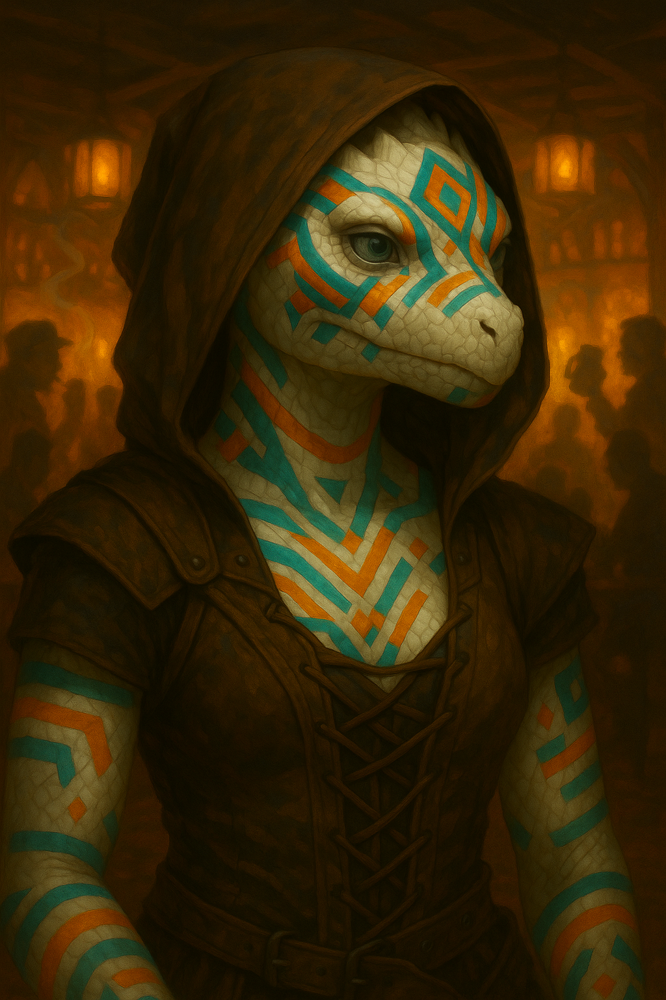

Beitian "Betty" Winter's Heart¶

"You hear lies. I see them. We're not the same. I poke holes in them till they deflate like puffballs."
Deaf Dragonborn Dragonchess prodigy turned gambling addict, haunted by her own brilliance and the clan debt she swore to repay. One perfect hand away from redemption... for years.
Keywords: Psionic Rogue, Dragonchess Prodigy, Gambling Addiction, Deaf Representation, White Dragonborn, Clan Exile
Character Overview¶
- Species: White Dragonborn (Clan Bellokan)
- Class: Rogue 5 (Soulknife)
- Background: Gambler
- Age: 26
- Alignment: Chaotic Good
Quick Intro
At the Table
- Chipper, sardonic genius who's too smart for her own good and can't resist a puzzle or a bet
- Communicates via sign language, lip-reading, and Psychic Whispers—uses psionics to crack jokes directly into allies' minds
- Desperately wants to repay her clan debt but keeps doubling down at gaming tables instead of saving up
- The friend who'll grumble and bail you out financially, then immediately lose her own gold trying to "beat the system"
Backstory (Short Form)
Betty was born into an isolated White Dragonborn clan with no earbones, communicating only through sign language and rare psionic gifts. A Dragonchess prodigy who beat the clan champion at fifteen, she got hustled by a traveling card sharp named Desdemond Swigg and lost catastrophically. Her clan paid her debts, but shame drove her to swear she'd repay every coin. Years later, she's still chasing that one perfect hand while her psionic blades keep her alive in the lowlands.
Playing Betty
- Combat: Psionic Blades for reliable damage, mobility for positioning, uses Psychic Whispers tactically for silent coordination—reads battlefields like she reads Dragonchess boards
- Roleplay: Chipper and quick-witted, cracks psychic jokes mid-conversation, loves gossip and drama, gets visibly excited about puzzles or court intrigue—sulks briefly after gambling losses then bounces back
- Party Synergy: Natural team player who covers others' debts (literally and metaphorically), turns her deafness into tactical advantages with party coordination, keeps morale high with irreverent humor
Deep Dive
Backstory (Full)¶
Beitian "Betty" Winter's Heart grew up in the snowy isolation of the White Dragonborn of Clan Bellokan. By some twist of fate, the clan inherited a reptilian trait: they had no earbones, and only communicated through sign language. At some point in the history of the clan, they were bestowed a rare gift of psionic abilities. Not all, but some of the clan members would be born with the ability to communicate directly, mind to mind. These individuals would often become important members of the clan, and its foremost ambassadors with the outside world. Beitian was one such child born with the "gift".
Many followed her with interest. Not only did she have the gift, she was also too clever for her own good. A prodigy at Dragonchess, at fifteen she beat the clan champion, and she never let anyone forget it. Clever puzzles, riddles, and the thrill of outthinking an opponent became her favorite sport, and her greatest weakness.
When Desdemond Swigg, a traveling Three-Dragon Ante card sharp came through the ice market (the clan's annual event for trading and meeting with the outside world), Beitian was certain she saw through every bluff. Only, she didn't. Her loss left her deep in debt. Her clan, with some reluctance, pooled their resources to pay off the worst of it, but shame drove her to swear she'd travel to repay every coin, and then some.
In the cities of the lowlands, her psionic blades and quick wit have kept her alive, but the lure of the gaming table keeps her purse light and her promise unfulfilled. She's certain she's only one perfect hand away from setting things right… and she's been certain of that for years.
Betty's Personality¶
Betty is chipper and sardonic, and a bit too smart for her own good. She loves to crack puzzles, solve riddles and outsmart street hustlers. But she won't stand for one of her friends getting swindled, unless of course she's the one doing the swindling, and it's all in good fun.
She's not great with money though. If a friend needs it, she'll likely grumble and pay up for them. After all, that's what others have done for her in the past, and she's so deep in the red anyways, and so used to fortune swinging wildly, even large amounts of money feel more like temporary setbacks to her.
Betty loves to use her abilities to play subtle pranks on people around her, though never in a cruel way. If she can crack a quip using Psychic Whispers that makes her buddy giggle in front of the Archdeacon of the God of Lemons and Dour Faces, it'll make her day.
Her biggest issue is her own intellect feeding into a gambling addiction. She always thinks she's figured out the system, and lacks the patience to just let her money accumulate until her debts are repaid. She wants to repay her clan debt above all else, but every time she accumulates some gold she tries to double it, and ends up back on zero again. Cue a short period of sulking. But she's an emotional phoenix, just as quick to recover as she is to descend.
Gossip, drama, sappy love stories and court battles are distilled ambrosia to Betty. She'd hook it up straight to her veins if she could.
The sting of shame is real. Beitian can't quite admit to herself that her family probably still loves her, misses her and would forgive her in an instant if she only came back safely, so she stays away until she feels she can return in style, preferrably with grand gifts for the whole clan. But with every year that passes, the pressure to not come back empty handed keeps growing. Meanwhile, her clan misses a powerful psionic and beloved missed daughter.
Her clan lives in the icy cold mountains, and perhaps that is why they love color. It is customary for the clan members to paint their white scaly hides in all manners of colors and patterns, with the colors signifying moods, aspirations and fears, and the patters symbolising relationships or important events.
Beitian often uses variations of the colors teal, orange, and turquoise, representing genius, adventure, and pride.
Other colors she may use are purple and green, together representing nostalgia and home sickness, or rust red and deep grey, symbolising commitment and loneliness.
Beitian loves playing Dragonchess and will happily spend downtime reading up on lore, strategy, openings. When visiting new cities, she'll immediately start looking up the parks or inns where the local players are. It's become a natural place for her to gossip, socialize, learn about current events and maybe do some light hustling on the side.
Homesickness: She changes the subject if someone asks too much about her clan, unless she's drunk or in danger. Then, she might even overshare.
Personality traits Lives for drama, court cases, gossip and wild plot twists.
Ideals Be honest, but within reason.
Bonds What the hell kinda name is Desdemond Swigg anyway?
Flaws Thinks way too highly of her abilities.
Sample Quotes¶
"You hear lies. I see them. We're not the same. I poke holes in them till they deflate like puffballs."
"Luck is just math with better PR. I can see right through it! ...Ok, that was merely a miscalculation."
"I don't cheat. I… accelerate the inevitable."
"Saw that move coming, stupid bandit. That one, too. You're not slow... just predictable. My move!"
"My clan didn't raise quitters. Fools, maybe. But not quitters. I'm paying it all back, one day."
"If you're my friend, your debt's mine too. That's how friendship works, right? Yeah of course it goes both ways! Speaking of which..."
"Checkmate comes faster than you think. Especially when you're playing a queen! Ha!"
"Yeah sure, the house always wins... Provided nobody sets the house on fire."
"Hey barkeep, yes this is the white dragonborn gal in the corner speaking directly into your mind. Couldn't be arsed to get up. Pretzels please!"
"Lowlands are either soft and mushy or hard and flat. I so miss the crunch of snow underfoot."
Notes for the DM
Table Guidance: Playing a Deaf Character¶
Betty's deafness is a part of her identity, not a constant penalty or "gotcha" mechanic. It's a roleplay hook, a reason for certain choices, and an opportunity to bring in richer descriptions, inclusion and representation to your table. It needs to be portrayed as a lived reality she adapts to with skill, humor and creativity, not as a tragic flaw that haunts her existence. The bottom line needs to be: Betty is fine. At the table, focus on teamwork, memorable moments, fun, and creative problem-solving. Not repeated events of frustration.
For the Player: Choose when it matters. Signal to the DM when you want her hearing to come into play. e.g., in a crowded tavern she might miss a verbal cue, but in a calm one-on-one conversation she can track fine.
Lean into strengths. Use visual cues, lip reading, body language, and Psychic Whispers as primary tools. Make a point of noticing details others overlook, but avoid the "disabled with superpowers" stereotype. But don't self-nerf too much! Betty is very capable and can speak several languages even though she doesn't hear them. Unless the scene benefits from it, don't bog yourself down with disadvantage rolls. The impairment is about flavor and resource choices, not punishment.
Make it part of your banter. She can joke about "missing" something to mask a bluff, or pause a beat to study an opponent before responding.
For the DM: Spotlight without punishing. Bring it into play a couple of times per session, enough to make it meaningful, but not so often it slows things down or sidelines the character. Offer small narrative trade-offs. In chaotic conditions, her trained mind might pick up on vibrations or visual signs before anyone else!
Let her choose when to spend psychic dice. If she wants to "hear" clearly via Psychic Whispers, treat it like flipping on a comm link, and honor that investment of a limited resource. Use her disability to build connection. Encourage party members to develop silent signals with her, learn to sign, and turn what could be a limitation into a tactical advantage.
Observant (Clan Feature: Homebrew): If you can see a creature's mouth while it is speaking a language you understand, you can interpret what it's saying by reading its lips.
Plot Hooks¶
Stubborn pride: Beitian still hasn't forgotten or forgiven the way Desdemond Swigg outplayed her. She's sworn to find Desdemond and beat him at his own game. She's getting better, but strong card sharps still get the better of her at the table, and she's starting to suspect maybe she has a hidden "tell"?
Magic Item Considerations¶
Note on the lip-reading homebrew (a part borrowed from the legacy feat Observant) and magic items:
Beitian can read lips, and has access to flight. Together with the Eyes of the Eagle artifact, she could presumably fly up in the air, use the artifact to see across a lot of the city, and read the lips of anybody to see what they're saying.
This could allow her to gather information from unusual distances or vantage points. It is intended as a flavorful character strength, not a way to bypass every investigation or stealth challenge. The final call on what she can see or interpret rests with the DM, taking into account distance, lighting, obstacles, weather, and other in-world factors. The goal is to use this ability to create memorable moments and clever tactics, not to short-circuit story beats.
All tables have different norms when it comes to magic items. Always double check artifacts in character sheets such as Betty's with your DM, since these are all ultimately just suggestions for how you could get more out of your character.
Mechanical build (lv 5) and PDF download
| STR | DEX | CON | INT | WIS | CHA |
|---|---|---|---|---|---|
| 8 (-1) | 18 (+4) | 14 (+2) | 16 (+3) | 8 (-1) | 10 (+0) |
Combat Stats¶
| AC | HP | Hit Dice | Speed | Initiative | Prof. Bonus |
|---|---|---|---|---|---|
| 16 | 38 | 5d8 | 30 ft. | +7 | +3 |
Saving Throws: DEX +7, INT +6
Resistances: Cold
Proficiencies¶
Skills: Acrobatics +10, Deception +3, Investigation +9, Persuasion +3, Sleight of Hand +7, Stealth +7
Armor: Light Armor | Weapons: Simple Weapons, Hand Crossbows, Longswords, Rapiers, Shortswords
Tools: Thieves' tools, Dragonchess Set | Languages: Common, Draconic, Giant, Thieves' Cant
Feats¶
- Observant (Homebrew Clan Feature): If you can see a creature's mouth while it is speaking a language you understand, you can interpret what it's saying by reading its lips.
Equipment¶
Studded leather armor, Thieves' tools, Dragonchess set, Rapier, Scimitars
Soulknife Features¶
Psionic Energy Dice: 5d8 (regain all on long rest)
Psychic Blades: Manifest psychic daggers as bonus action, 1d6+4 psychic damage (counts as magical)
Psychic Whispers: Spend psionic die to establish telepathic communication with creatures within 1 mile for 1 hour per die expended
Soul Blades: Can use psionic die for Homing Strikes (reroll missed attack) or Psychic Teleportation (10 ft teleport as bonus action)
Session Zero Considerations
Content Notes: Gambling addiction, self-destructive behavior patterns, financial debt, family shame and exile. Themes of disability are present but portrayed positively—Betty's deafness is an identity element, not a tragedy.
Representation Notes: Betty is a deaf character designed for authentic representation. Her deafness should be portrayed as a lived reality she navigates with skill and creativity, not as a limitation or constant penalty. Players and DMs should discuss comfort levels with portraying disability, signing/communication mechanics, and ensuring the character feels empowering rather than frustrating to play. The character works best at tables that value collaborative storytelling and are willing to occasionally spotlight accessibility as a narrative element.